Note: The assignment is due on Nov 22, 2021. Send your code and html/pdf report to dlouha@cs.cas.cz (and to martinkova@cs.cas.cz in copy).
Done.
Done.
Note: If you meet any issues, contact the the TA or the instructor before 8 AM of the due date.
Done.
I am working with the BFI2 dataset from the ShinyItemAnalysis package. The BFI2dataset contains responses of \(1733\) Czech respondents to the Big Five Inventory 2, as well as information about their age, education, and gender. The BFI2 items are scored using a 5-point Likert scale. I used alternative item names provided in the dataset documentation.
data(BFI2, package='ShinyItemAnalysis')
# Change column names
colnames(BFI2)[1:60] <- c("iEscb01", "iAcmp02", "iCorg03r", "iNanx04r", "iOaes05r", "iEasr06",
"iArsp07", "iCprd08r", "iNdep09r", "iOint10", "iEenl11r", "iAtrs12r", "iCrsp13", "iNemt14",
"iOcrt15", "iEscb16r", "iAcmp17r", "iCorg18", "iNanx19", "iOaes20", "iEasr21", "iArsp22r",
"iCprd23r", "iNdep24r", "iOint25r", "iEenl26r", "iAtrs27", "iCrsp28r", "iNemt29r",
"iOcrt30r", "iEscb31r", "iAcmp32", "iCorg33", "iNanx34", "iOaes35", "iEasr36r", "iArsp37r",
"iCprd38", "iNdep39", "iOint40", "iEenl41", "iAtrs42r", "iCrsp43", "iNemt44r", "iOcrt45r",
"iEscb46", "iAcmp47r", "iCorg48r", "iNanx49r", "iOaes50r", "iEasr51r", "iArsp52", "iCprd53",
"iNdep54", "iOint55r", "iEenl56", "iAtrs57", "iCrsp58r", "iNemt59", "iOcrt60")
# Data frames for domains
BFI2_e <- BFI2[, seq(1, 56, 5)]
BFI2_a <- BFI2[, seq(2, 57, 5)]
BFI2_c <- BFI2[, seq(3, 58, 5)]
BFI2_n <- BFI2[, seq(4, 59, 5)]
BFI2_o <- BFI2[, seq(5, 60, 5)]I created datasets for the respective BFI domains.
For this task, I used the ItemAnalysis function from the ShinyItemAnalysis package. I extracted selected indices (Difficulty, RIR, RIT, ULI and alphaDrop) for each of the Big5 domains, then I highlighted the most interesting/problematic values. Using DDplot I plotted the difficulty and discrimination for each domain as well.
it_al_e <- round(data.frame(ItemAnalysis(Data = BFI2_e, maxscore = 5, minscore = 1)[c("Mean", "SD", "Difficulty", "RIR", "RIT", "ULI", "gULI", "Alpha.drop")]), digits=4)
it_al_a <- round(data.frame(ItemAnalysis(Data = BFI2_a, maxscore = 5, minscore = 1)[c("Mean", "SD", "Difficulty", "RIR", "RIT", "ULI", "gULI", "Alpha.drop")]), digits=4)
it_al_c <- round(data.frame(ItemAnalysis(Data = BFI2_c, maxscore = 5, minscore = 1)[c("Mean", "SD", "Difficulty", "RIR", "RIT", "ULI", "gULI", "Alpha.drop")]), digits=4)
it_al_n <- round(data.frame(ItemAnalysis(Data = BFI2_n, maxscore = 5, minscore = 1)[c("Mean", "SD", "Difficulty", "RIR", "RIT", "ULI", "gULI", "Alpha.drop")]), digits=4)
it_al_o <- round(data.frame(ItemAnalysis(Data = BFI2_o, maxscore = 5, minscore = 1)[c("Mean", "SD", "Difficulty", "RIR", "RIT", "ULI", "gULI", "Alpha.drop")]), digits=4)
# Extraversion
datatable(it_al_e, rownames = TRUE, options = list(pageLength = 12, lengthMenu = c(12), paging = FALSE, dom = 't'), caption = htmltools::tags$caption( style = 'caption-side: top; text-align: left; color:black; font-size:200% ;','Extraversion')) %>%
formatStyle(columns = "Difficulty",
backgroundColor = styleInterval(c(0.1, 0.9), c("blue", NA, "red"))) %>%
formatStyle(columns = "RIR",
backgroundColor = styleInterval(c(0.2), c("blue", NA))) %>%
formatStyle(columns = "Alpha.drop",
backgroundColor = styleInterval(c(psychometric::alpha(BFI2_e)), c(NA, "pink"))) %>%
formatStyle(columns = "ULI",
backgroundColor = styleInterval(c(0.2), c("pink", NA))) %>%
formatStyle(columns = "Difficulty",
color = styleEqual(c(min(it_al_e['Difficulty']), max(it_al_e['Difficulty'])), c("blue", "red"))) %>%
formatStyle(columns = "ULI",
color = styleEqual(c(min(it_al_e['ULI']), max(it_al_e['ULI'])), c("blue", "red")))DDplot(
Data = BFI2_e, discrim = "ULI", maxscore = 5, minscore = 1)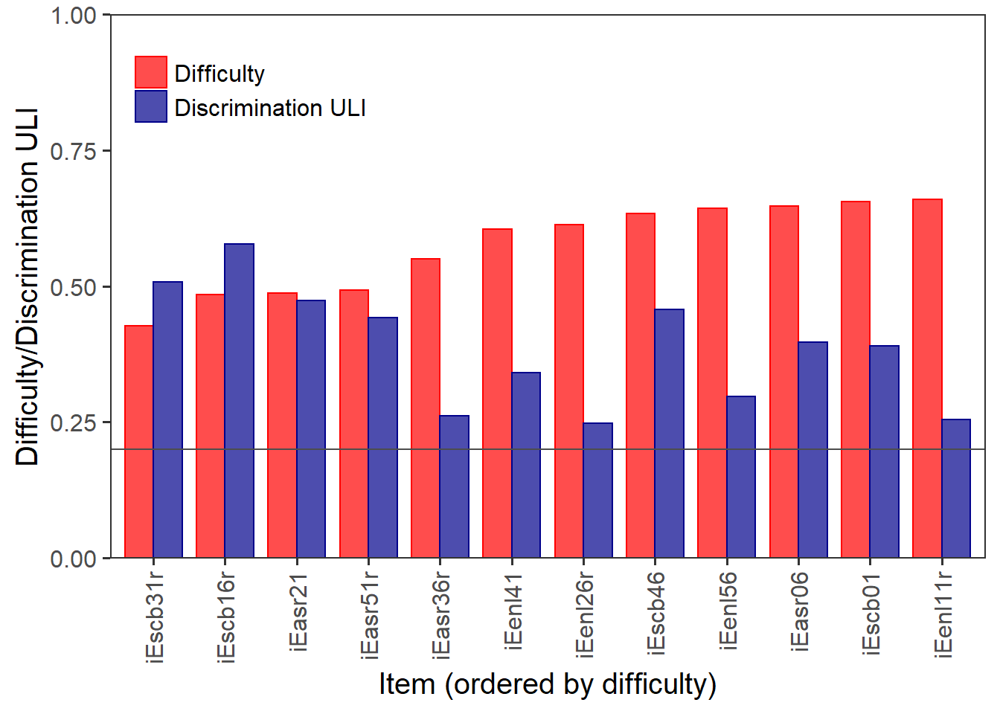
Overall, it can be stated that the difficulty (popularity) of all the Extraversion items does not exceed the range of \([0.4, 0.7]\), which can be interpreted as acceptable. Similarly, the upper-lower index (ULI) never drops below the \(0.2\) threshold, which means that all items differentiate relatively well between respondents with a high and low Extraversion score.
Item number 11 (iEenl11r) has the highest difficulty and a low value of ULI. Furthermore, the Alpha.drop value for this item indicates that it lowers the reliability (estimated with Cronbach’s \(\alpha\)) of the domain. The wording of this item is: “Považuji se za někoho, kdo zřídkakdy pociťuje vzrušení a nadšení pro věc.” Since this item is already reverse-coded, one could conclude that most respondents disagreed with this statement, and that it does not differentiate between introverts and extraverts as much as some of the other items. Perhaps the wording of the item invokes a rather negative self-image that most people, even introverts, are reluctant to accept (social desirability). This item might also be better at targeting neurotic traits (depression, anxiety…) than introversion.
In contrast, item number 31 (“Považuji se za někoho, kdo je někdy plachý, introvertní.”) has the lowest difficulty (popularity). Again, this is a reverse-coded item, so most respondents agreed with this statement. I would hypothesize that the wording is too vague, maybe it would be better to avoid words such as sometimes that leave too much space for subjective interpretation.
Item 16 (“Považuji se za někoho, kdo bývá tichý.”) is the best at discriminating between extraverts and introverts, item 26 (“Považuji se za někoho, kdo je méně činorodý než ostatní.”) is the worst. Item 26 could be problematic due to social desirability. Lastly, item 36 (“Považuji se za někoho, kdo pokládá za obtížné ovlivňovat druhé.”) also seems to decrease the reliability of this scale. Perhaps this item has more to do with traits like machiavellianism and narcissism than extraversion.
# Agreeability
datatable(it_al_a, rownames = TRUE, options = list(pageLength = 12, lengthMenu = c(12), paging = FALSE, dom = 't'), caption = htmltools::tags$caption( style = 'caption-side: top; text-align: left; color:black; font-size:200% ;','Agreeability')) %>%
formatStyle(columns = "Difficulty",
backgroundColor = styleInterval(c(0.1, 0.9), c("blue", NA, "red"))) %>%
formatStyle(columns = "RIR",
backgroundColor = styleInterval(c(0.2), c("blue", NA))) %>%
formatStyle(columns = "Alpha.drop",
backgroundColor = styleInterval(c(psychometric::alpha(BFI2_a)), c(NA, "pink"))) %>%
formatStyle(columns = "ULI",
backgroundColor = styleInterval(c(0.2), c("pink", NA))) %>%
formatStyle(columns = "Difficulty",
color = styleEqual(c(min(it_al_a['Difficulty']), max(it_al_a['Difficulty'])), c("blue", "red"))) %>%
formatStyle(columns = "ULI",
color = styleEqual(c(min(it_al_a['ULI']), max(it_al_a['ULI'])), c("blue", "red")))DDplot(
Data = BFI2_a, discrim = "ULI", maxscore = 5, minscore = 1)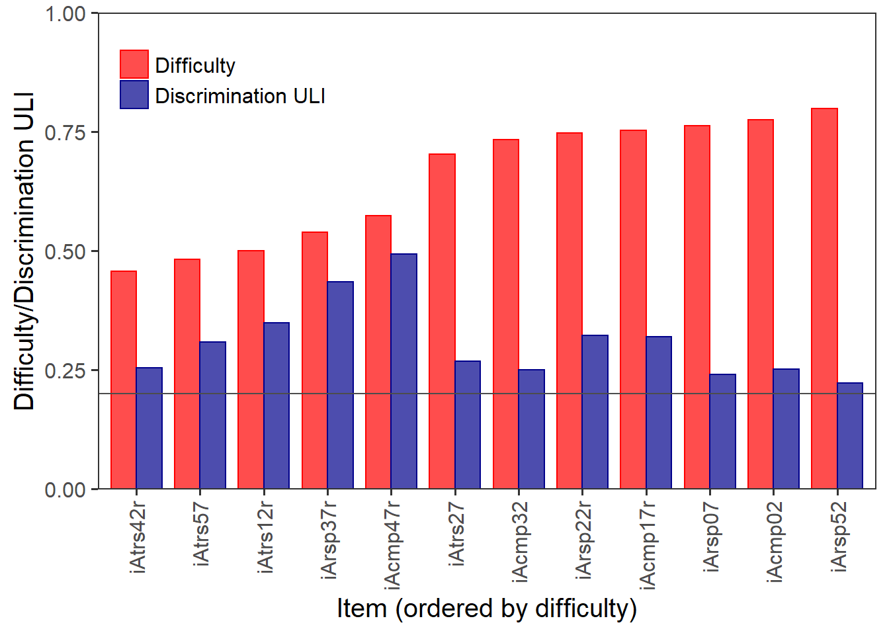
The difficulty and ULI of all Agreeability items are in an acceptable range and none of the items decrease the scale’s reliability.
Item 42 (“Považuji se za někoho, kdo je vůči záměrům ostatních nedůvěřivý.”) has the lowest difficulty (popularity) and a relatively low ULI. Since it is a reverse-coded item, most respondents agreed with this statement. One possible explanation could be the negative connotation of the word důvěřivý. Hypothetically, this effect could also be explained sociologically (lower trust in post-communist countries).
Item 52 (“Považuji se za někoho, kdo je k ostatním slušný a zdvořilý.”) has the highest popularity and the lowest ability to discriminate between agreeable and non-agreeable respondents. This could be explained by social desirability.
Item 47 (“Považuji se za někoho, kdo dokáže být chladný a bezcitný.”) has the highest ULI and thus, it is best at differentiating between agreeable and non-agreeable respondents.
# Conscientiousness
datatable(it_al_c, rownames = TRUE, options = list(pageLength = 12, lengthMenu = c(12), paging = FALSE, dom = 't'), caption = htmltools::tags$caption( style = 'caption-side: top; text-align: left; color:black; font-size:200% ;','Conscientiousness')) %>%
formatStyle(columns = "Difficulty",
backgroundColor = styleInterval(c(0.1, 0.9), c("blue", NA, "red"))) %>%
formatStyle(columns = "RIR",
backgroundColor = styleInterval(c(0.2), c("blue", NA))) %>%
formatStyle(columns = "Alpha.drop",
backgroundColor = styleInterval(c(psychometric::alpha(BFI2_c)), c(NA, "pink"))) %>%
formatStyle(columns = "ULI",
backgroundColor = styleInterval(c(0.2), c("pink", NA))) %>%
formatStyle(columns = "Difficulty",
color = styleEqual(c(min(it_al_c['Difficulty']), max(it_al_c['Difficulty'])), c("blue", "red"))) %>%
formatStyle(columns = "ULI",
color = styleEqual(c(min(it_al_c['ULI']), max(it_al_c['ULI'])), c("blue", "red")))DDplot(
Data = BFI2_c, discrim = "ULI", maxscore = 5, minscore = 1)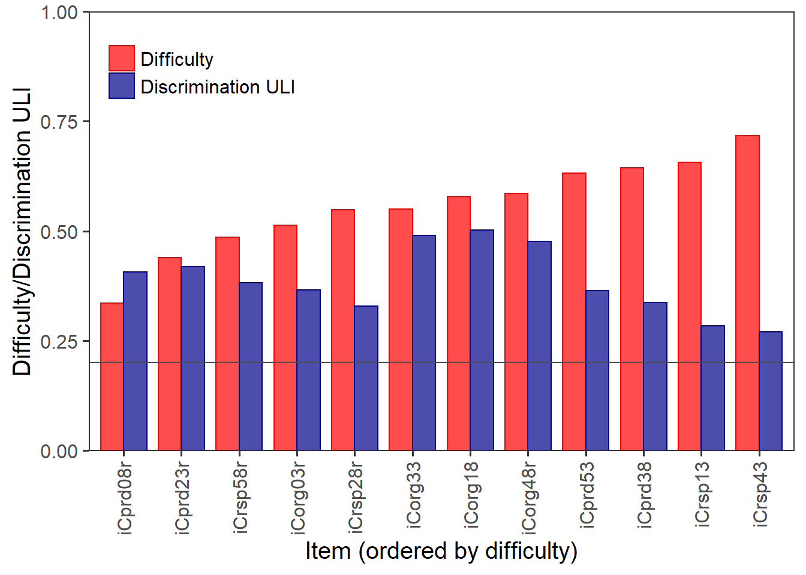
None of the items seem to be extremely faulty.
Item 8 (“Považuji se za někoho, kdo má sklon být líný.”) has the lowest difficulty (popularity). As it is a reverse-coded item, most respondents agreed with the original statement. Perhaps this could be explained sociologically – either by the age range of the sample (\(15-26\)) or by an increased societal pressure on productivity.
Item 43 (“Považuji se za někoho, kdo je důvěryhodný, vždy se na něj dá spolehnout.”) has the highest popularity and the lowest ability to differentiate between conscientious and non-conscientious respondents, probably due to social desirability.
Item 18 (“Považuji se za někoho, kdo je systematický, udržuje ve věcech pořádek.”) has the highest ULI and is therefore the best at discriminating between conscientious and non-conscientious respondents.
# Negative Emotionality
datatable(it_al_n, rownames = TRUE, options = list(pageLength = 12, lengthMenu = c(12), paging = FALSE, dom = 't'), caption = htmltools::tags$caption( style = 'caption-side: top; text-align: left; color:black; font-size:200% ;','Negative Emotionality')) %>%
formatStyle(columns = "Difficulty",
backgroundColor = styleInterval(c(0.1, 0.9), c("blue", NA, "red"))) %>%
formatStyle(columns = "RIR",
backgroundColor = styleInterval(c(0.2), c("blue", NA))) %>%
formatStyle(columns = "Alpha.drop",
backgroundColor = styleInterval(c(psychometric::alpha(BFI2_n)), c(NA, "pink"))) %>%
formatStyle(columns = "ULI",
backgroundColor = styleInterval(c(0.2), c("pink", NA))) %>%
formatStyle(columns = "Difficulty",
color = styleEqual(c(min(it_al_n['Difficulty']), max(it_al_n['Difficulty'])), c("blue", "red"))) %>%
formatStyle(columns = "ULI",
color = styleEqual(c(min(it_al_n['ULI']), max(it_al_n['ULI'])), c("blue", "red")))DDplot(
Data = BFI2_n, discrim = "ULI", maxscore = 5, minscore = 1)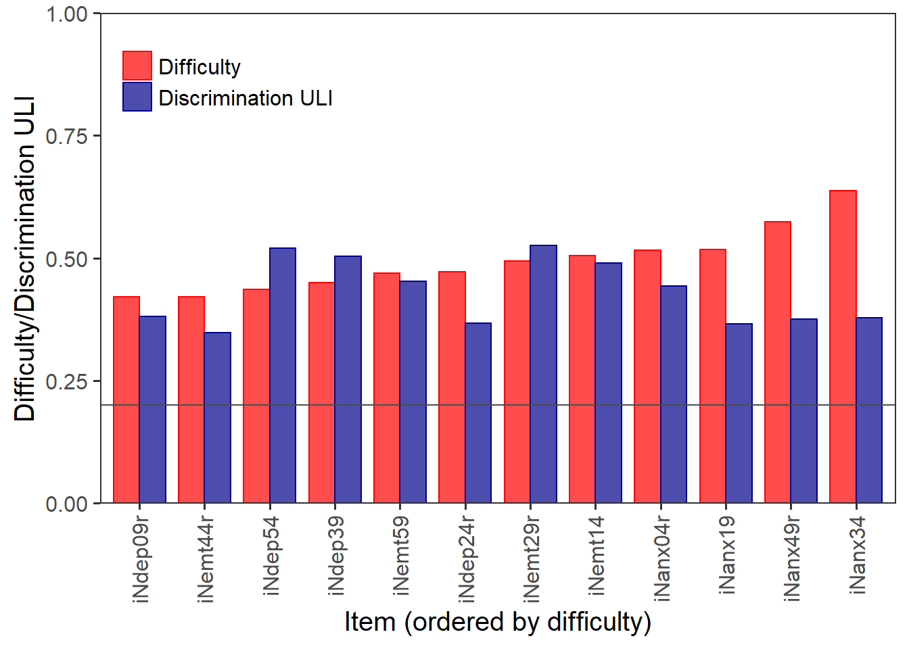
All of the items seem to function relatively well.
Item 9 (“Považuji se za někoho, kdo zůstává optimistický i po nějakém nezdaru.”) has the lowest difficulty, probably due to social desirability.
Item 34 (“Považuji se za někoho, kdo si hodně dělá starosti.”) has the highest difficulty – perhaps because of the vague phrasing.
Item 29 (“Považuji se za někoho, kdo je emočně vyrovnaný, jen tak něco ho nerozhodí.”) has the highest ULI, it is best at discriminating between respondents with high and low Negative Emotionality scores.
Item 44 (“Považuji se za někoho, kdo drží své emoce pod kontrolou.”) has the lowest ULI, maybe because it relies too heavily on individual understanding of control.
# Open-Mindedness
datatable(it_al_o, rownames = TRUE, options = list(pageLength = 12, lengthMenu = c(12), paging = FALSE, dom = 't'), caption = htmltools::tags$caption( style = 'caption-side: top; text-align: left; color:black; font-size:200% ;','Open-Mindedness')) %>%
formatStyle(columns = "Difficulty",
backgroundColor = styleInterval(c(0.1, 0.9), c("blue", NA, "red"))) %>%
formatStyle(columns = "RIR",
backgroundColor = styleInterval(c(0.2), c("blue", NA))) %>%
formatStyle(columns = "Alpha.drop",
backgroundColor = styleInterval(c(psychometric::alpha(BFI2_o)), c(NA, "pink"))) %>%
formatStyle(columns = "ULI",
backgroundColor = styleInterval(c(0.2), c("pink", NA))) %>%
formatStyle(columns = "Difficulty",
color = styleEqual(c(min(it_al_o['Difficulty']), max(it_al_o['Difficulty'])), c("blue", "red"))) %>%
formatStyle(columns = "ULI",
color = styleEqual(c(min(it_al_o['ULI']), max(it_al_o['ULI'])), c("blue", "red")))DDplot(
Data = BFI2_o, discrim = "ULI", maxscore = 5, minscore = 1)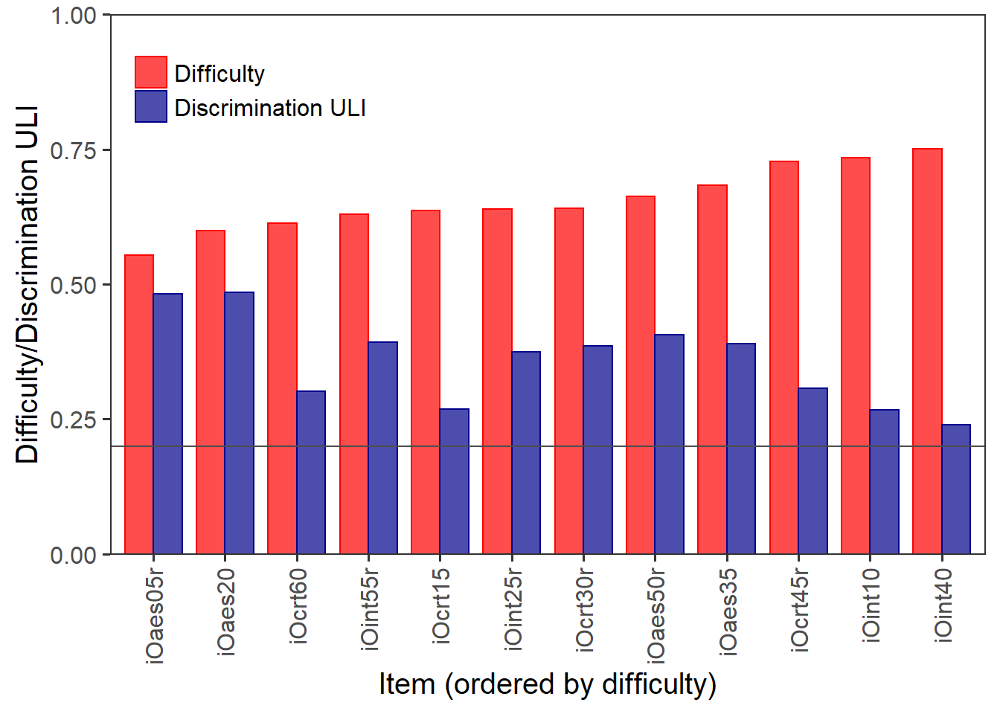
Again, all of the items seem to function relatively well.
Item 5 (“Považuji se za někoho, kdo se o umění příliš nezajímá.”) has the lowest difficulty (popularity), maybe due to social desirability.
Item 40 (“Považuji se za někoho, kdo je přemýšlivý, nad věcmi uvažuje do hloubky.”) has the highest difficulty and the lowest ULI – again, I would say the phrasing is quite vague and general enough to apply to most people.
Item 20 (“Považuji se za někoho, kdo je fascinován uměním, hudbou a literaturou.”) has the highest ULI, so it is the best at differentiating between open-minded and non-open-minded respondents.
I selected item iArsp52, since it is the most difficult item from the whole inventory, and item iEscb16r as the best discriminating item. With the help of the selected R code in the interactive ShinyItemAnalysis app I created empirical item characteristic curves for both of these items. I used three groups for item iArsp52 and two groups for item iEscb16r
plotDistractorAnalysis(BFI2_a, num.group = 3, item = 11, multiple.answers = TRUE) +
labs(title="iArsp52 (most difficult item)",
subtitle='"Považuji se za někoho, kdo je k ostatním slušný a zdvořilý."') +
theme(plot.subtitle = element_text(face="italic"))
DA <- DistractorAnalysis(BFI2_a, key = 5, num.groups = 3, p.table = TRUE)[[11]]
dcast(as.data.frame(DA), response ~ score.level, sum, margins = TRUE, value.var = "Freq")plotDistractorAnalysis(BFI2_e, num.group = 2, item = 4, multiple.answers = TRUE) +
labs(title="iEscb16r (best discriminating item, reversed)",
subtitle='"Považuji se za někoho, kdo bývá tichý."') +
theme(plot.subtitle = element_text(face="italic"))
DA <- DistractorAnalysis(BFI2_e, key = 5, num.groups = 2, p.table = TRUE)[[4]]
dcast(as.data.frame(DA), response ~ score.level, sum, margins = TRUE, value.var = "Freq")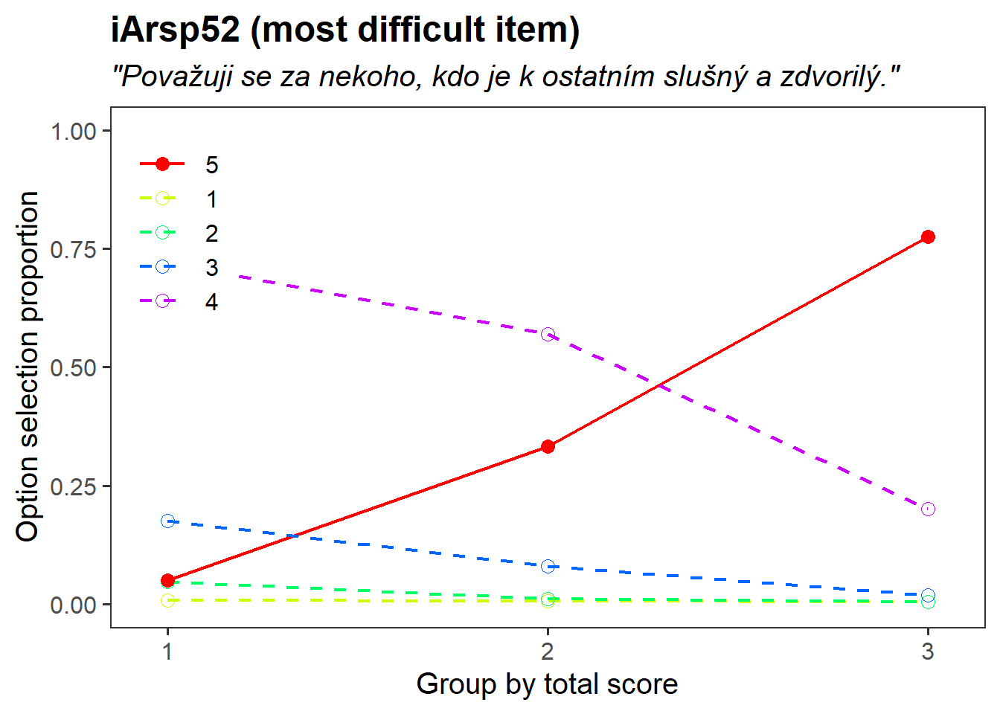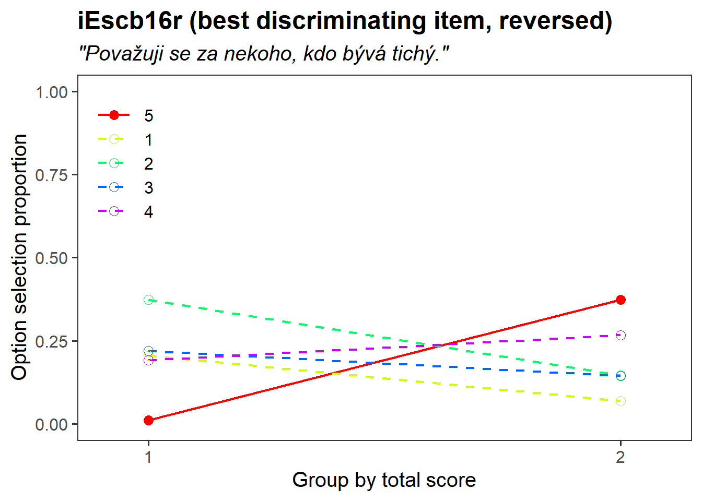
As we can see from the response curve for item iArsp52, answer 5 (“Agree strongly”) is selected more often by respondents with a higher total score (higher agreeability). However, it is also the most difficult/popular item with a low discrimination, which can be seen from the high option selection proportions for answers 4 (“Agree a little.”) and 5 (“Agree strongly”) even in groups with low/lower total scores. Item iEscb16r is reversed, so respondents with higher total scores (higher extraversion) select answers 1 (“Disagree strongly”) and 2 (“Disagree a little”) more often than respondents with lower total scores and vice versa.
I selected item iEscb16r (the best discriminating item) and binarized it in a way that assigned value 1 to answers 4 and 5 on a Likert scale (“Agree a little” and “Agree strongly”), while assigning value 0 to the rest. For all models, I transformed the total scores to Z-scores using the scale() function. I also employed IRT parametrization. For the 3PL model, I used the nonlinear least squares method of estimation.
# binarize data
binarize <- function(x) {
ifelse(x %in% 4:5, 1, 0)
}
BFI2_e_bin <- data.frame(lapply(BFI2_e, binarize))
# Z-transformation
zscore <- scale(rowSums(BFI2_e_bin))
# logistic model for item 16
fit1 <- glm(BFI2_e_bin[, 4] ~ zscore, family = binomial)
# coefficients and standard errors
summary(fit1)$coefficients[, 1:2]## Estimate Std. Error
## (Intercept) -0.9226077 0.07382540
## zscore 2.1008412 0.09690751# probability difference of answering item 16 with Z-score 0 and 1
data.frame(
zscore_0 = exp(coef(fit1)[1]) / (1 + exp(coef(fit1)[1])),
zscore_1 = exp(coef(fit1)[1] + coef(fit1)[2]) / (1 + exp(coef(fit1)[1] + coef(fit1)[2]))
)# IRT parametrization
IRTpars16 <- c(coef(fit1)[2], -coef(fit1)[1] / coef(fit1)[2])
setNames(IRTpars16, c("a", "b"))## a b
## 2.1008412 0.4391611# delta method to calculate SE
msm:: deltamethod(
g = list(~ x2, ~ - x1 / x2),
mean = coef(fit1),
cov = vcov(fit1)
)## [1] 0.09690751 0.03264921# probit regression mode
fit2 <- glm(BFI2_e_bin[, 4] ~ zscore, family = binomial(link = "probit"))
# coefficients and standard errors
summary(fit2)$coefficients[, 1:2]## Estimate Std. Error
## (Intercept) -0.5343976 0.04095778
## zscore 1.2261602 0.05061482# probability of answering item 16 with Z-score 0
pnorm(coef(fit2)[1])## (Intercept)
## 0.2965333# probability of answering item 16 with Z-score 1
pnorm(coef(fit2)[1] + coef(fit2)[2])## (Intercept)
## 0.7554568# function for plot (logit)
mod_logit <- function(x, b0, b1) {
exp(b0 + b1 * x) / (1 + exp(b0 + b1 * x))
}
# function for plot (probit)
mod_probit <- function(x, b0, b1) {
pnorm(b0 + b1 * x)
}
df <- data.frame(
x = sort(unique(zscore)),
y = tapply(BFI2_e_bin[, 4], zscore, mean),
Count = as.numeric(table(zscore))
)
# Logistic regression curve for logit and probit link (item 16)
ggplot(df, aes(x = x, y = y)) +
geom_point(aes(size = Count), color = "darkblue", fill = "darkblue", shape = 21, alpha = 0.5) +
stat_function(fun = mod_logit, geom = "line",
args = list(b0 = coef(fit1)[1], b1 = coef(fit1)[2]),
size = 0.8, aes(color = "logit", linetype = "logit")) +
stat_function(fun = mod_probit, geom = "line",
args = list(b0 = coef(fit2)[1], b1 = coef(fit2)[2]),
size = 0.8, aes(color = "probit", linetype = "probit")) +
xlab("Z-score") + ylab("Probability of answer 3 or higher") +
ylim(0, 1) +
scale_colour_manual("Link", values = c("darkblue", "darkgoldenrod2")) +
scale_linetype_manual("Link", values = c("solid", "dashed")) +
ggtitle("Reversed item 16 ('Považuji se za někoho, kdo bývá tichý.')")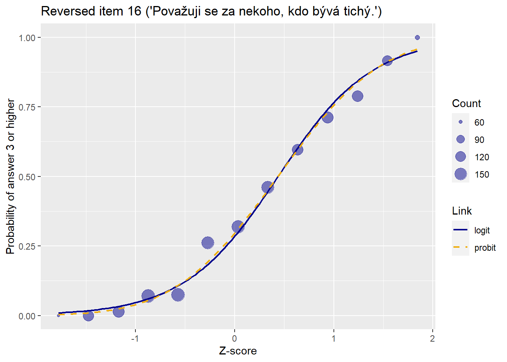
Logistic regression model
The estimated intercept \(-0.92\) with a standard error of \(0.07\) is the log-odds of disagreement with item 16 for a respondent with a Z-score of 0 points (mean total score of extraverion), the probability of disagreeing with this item would be \(0.28\). With each standard deviation increase in the total score, the log-odds of disagreement with item 16 would increase by the ratio of \(2.1\). For a respondent with a Z-score of \(1\) (above average extraversion), the log-odds of disagreeing with the item would thus be \(-0.92 + 2.1 = 1.18\) and the probability would be \(0.76\). With the IRT parametrization, difficulty of item 16 is estimated at \(0.44\) with a standard error of \(0.03\) and the item discrimination is estimated at \(2.1\). A respondent with a total score \(0.43\) SD above average has a probability of \(0.5\) to disagree with the item.
Probit regression model
The probability of disagreeing with item 16 by a respondent with Z-score of 0 (average total score) is \(0.3\) and \(0.76\) for a respondent with a Z-score of 1 (1 SD above mean).
# Create function mod_3PL
mod_3PL <- function(x, a, b, c) {
c + (1 - c) * exp(a * (x - b)) / (1 + exp(a * (x - b)))
}
# Use method nls() with mod_3PL() created earlier to estimate model parameters
fit3 <- nls(
BFI2_e_bin[, 4] ~ mod_3PL(zscore, a, b, c),
algorithm = "port",
start = c(a = 0.7, b = -0.9, c = 0),
lower = c(-Inf, -Inf, 0),
upper = c(Inf, Inf, 1)
)
# Estimated coefficients
coef(fit3)## a b c
## 1.9447916 0.4349806 0.0000000# Plot of estimated curve
ggplot(df, aes(x = x, y = y)) +
geom_point(aes(size = Count),
color = "darkblue",
fill = "darkblue",
shape = 21, alpha = 0.5
) +
stat_function(
fun = mod_3PL, geom = "line",
args = list(
a = coef(fit3)[1], # Set param a using coef() function
b = coef(fit3)[2], # Set param b using coef() function
c = coef(fit3)[3] # Set param c using coef() function
),
size = 0.8,
color = "darkblue"
) +
xlab("Z-score") +
ylab("Probability of correct answer") +
ylim(0, 1) +
ggtitle("Reversed item 16 ('Považuji se za někoho, kdo bývá tichý.')") +
theme(legend.position = c(0.88, 0.23))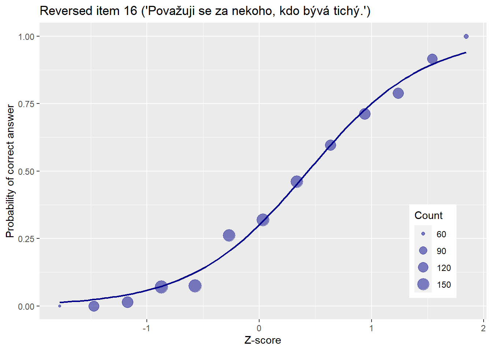 Respondents would have an estimated probability \(0\) of disagreeing with item 16 (note that this is a reversed item) despite having low extraversion. The observed trait (extraversion) is estimated at Z-score \(0.43\), for which the probability of disagreeing with the statement would be \(0.5\).
## 4PL
# NLR 4P model for item 13: add parameter d and save as mod_4PL function
mod_4PL <- function(x, a, b, c, d) {
c + (d - c) * exp(a * (x - b)) / (1 + exp(a * (x - b)))
}
# Use method nls() with mod_4PL() created earlier to estimate model parameters
fit4 <- nls(
BFI2_e_bin[, 4] ~ mod_4PL(zscore, a, b, c, d),
algorithm = "port",
start = c(a = 0.7, b = -0.9, c = 0, d = 1),
lower = c(-Inf, -Inf, 0, 0),
upper = c(Inf, Inf, 1, 1)
)
# Use coef() to extract estimated coefficients
coef(fit4)## a b c d
## 1.9447912 0.4349806 0.0000000 1.0000000# Model comparison
cbind(as.data.frame(AIC(fit1, fit2, fit3, fit4)), as.data.frame(BIC(fit1, fit2, fit3, fit4)))For item 16, the inattention parameter of the 4PL model is estimated to be \(1\), otherwise, the model is quite similar to the 3PL model. The model comparison shows that the 2PL (probit) model would be the best for item 16.
Again, I’m working with the reversed item 16 (“Považuji se za někoho, kdo bývá tichý.”). I decided to choose a cumulative logit model, since the BFI2 consists of Likert scale items.
# recoding data
BFI2_e_rec <- BFI2_e - 1
# z-score
zscore <- scale(rowSums(BFI2_e_rec))
# create a factor variable
max(BFI2_e_rec[, 4])## [1] 4maxval <- max(BFI2_e_rec[, 4])
BFI2_e_rec[, 4] <- ordered(factor(BFI2_e_rec[, 4], levels = 0:maxval))
# cumulative logit model for item 16
fit.cum <- vglm(BFI2_e_rec[, 4] ~ zscore,
family = cumulative(reverse = TRUE, parallel = TRUE))
# coefficients and SE
coef(fit.cum)## (Intercept):1 (Intercept):2 (Intercept):3 (Intercept):4 zscore
## 2.9367530 0.5143056 -0.8832174 -2.9103725 2.1761007sqrt(diag(vcov(fit.cum)))## (Intercept):1 (Intercept):2 (Intercept):3 (Intercept):4 zscore
## 0.09702355 0.06347559 0.06573433 0.09550154 0.06895762# IRT parametrization
c(-coef(fit.cum)[1:4] / coef(fit.cum)[5], coef(fit.cum)[5])## (Intercept):1 (Intercept):2 (Intercept):3 (Intercept):4 zscore
## -1.3495483 -0.2363427 0.4058716 1.3374255 2.1761007msm::deltamethod(
list(~ -x1 / x5, ~ -x2 / x5, ~ -x3 / x5, ~ -x4 / x5, ~ x5),
mean = coef(fit.cum), cov = vcov(fit.cum)
)## [1] 0.04226064 0.02915947 0.02965357 0.04141153 0.06895762# plots
plotCumulative(fit.cum, type = "cumulative") +
xlab("Z-score")
plotCumulative(fit.cum, type = "category") +
xlab("Z-score")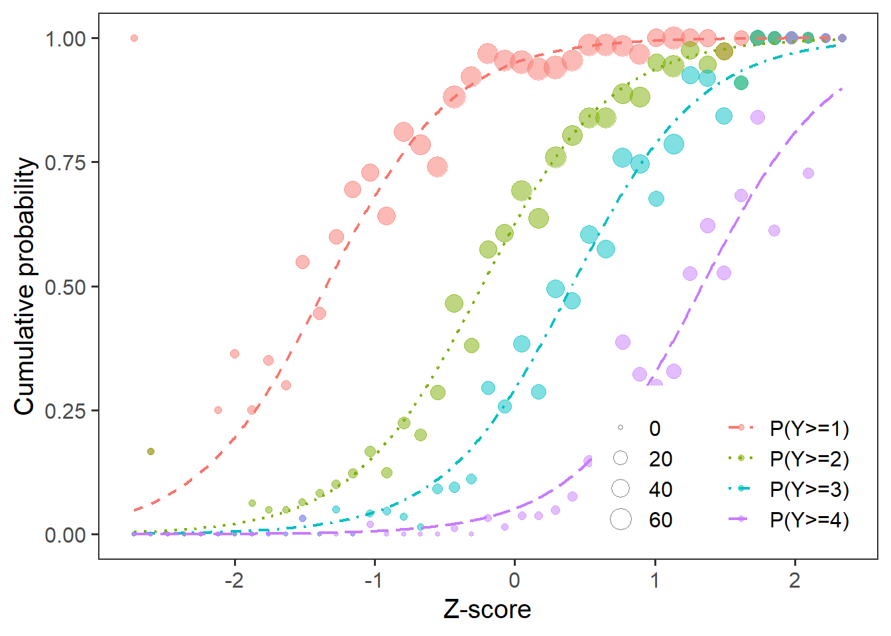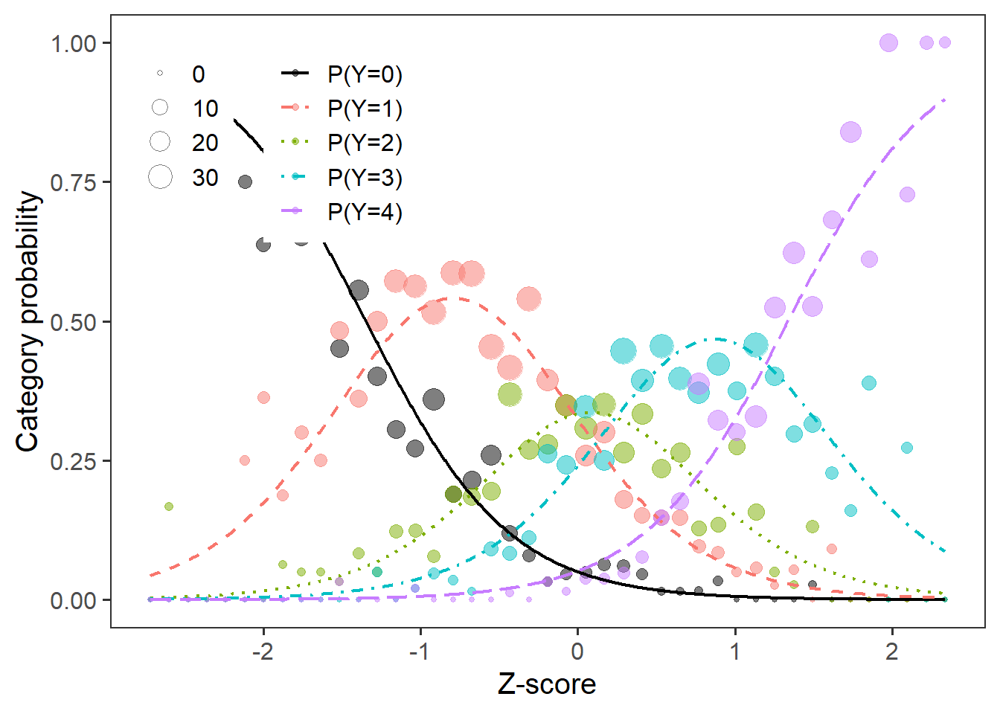
Respondent with a Z-score of \(-1.35\) (below average extraversion) has a \(0.5\) probability of answering at least “Agree a little”, respondent with a Z-score of \(-0.24\) (below average extraversion) has a \(0.5\) probability of answering at least “Neutral; no opinion”, respondent with a Z-score of \(0.41\) (above average extraversion) has a \(0.5\) probability of answering at least “Disagree a little”, and respondent with a Z-score of \(1.34\) (above average extraversion) has a \(0.5\) probability of answering at least “Disagree strongly”. With each unit increase of the Z-score, the log-odds of choosing the given answer or a lower one, increases by the ratio of \(2.18\).
Your text (description of methods).
Your text.